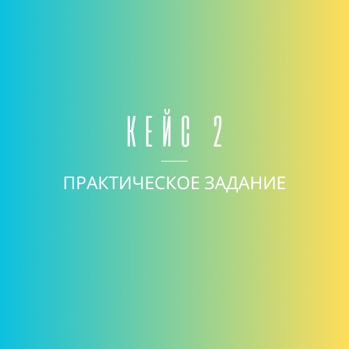
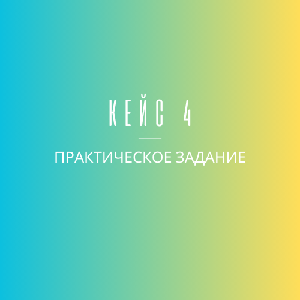

Определение величины риска инновационного проекта экспертным методом.
Применение методов агрегирования экспертных оценок, произведение оценки согласованности мнений.
Получение практических навыков работы с критериями для принятия решений в условиях неопределенности.
Решение задач принятия решений с использованием векторных критериев.
Принятие решений при многих критериях с помощью метода анализа иерархий.